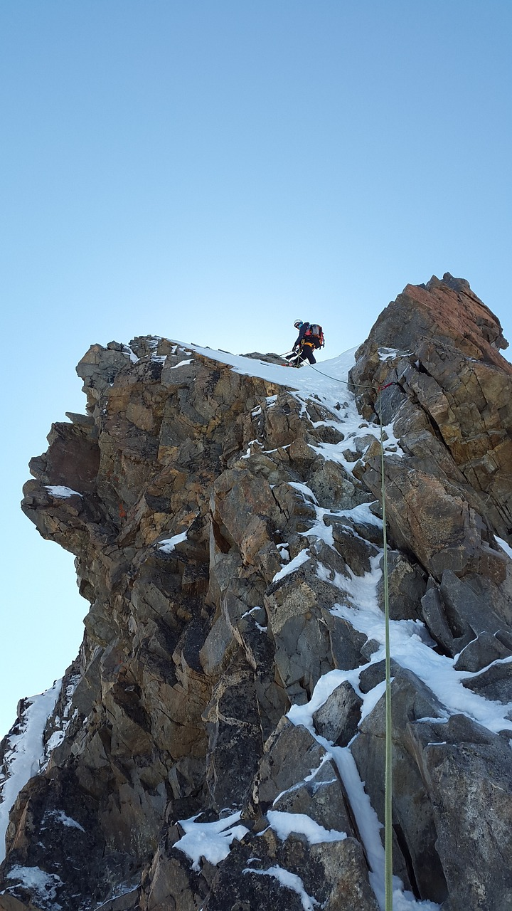
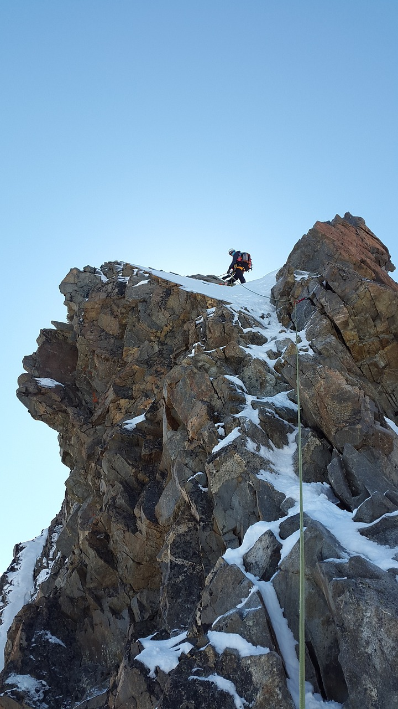

HIKING

Hikes often begin as a hike place holder. A hike place holder is a minimal description of a hike. Only the hike name and region are necessary to save the file, and hike place holders (as well as hikes “in process”) can be added to a hiking group’s schedule. We expect most hike place holders eventually to become published hikes. All of our hikes involve walking. Some are trips to interesting places that can be arranged with pueblos, national monuments, or even private individuals. The main difference between these and our usual hikes is that in these cases we depend on others to control what happens. The Actual Hike part of the description often can only say what might be included and who to contact to arrange a visit. These can remain hike place holders and never become hike descriptions.
CRUISES

If you like to get a lot for your money, cruising can be a great vacation option for you. While it varies by cruise line and the options you choose, cruising generally allows you to travel to and experience multiple destinations for an economical price (and you only have to unpack once).What are the cheapest months to cruise? Best Time to Book a Cruise — and When to Wait The best time of year to book a cruise is often January through March. Demand plummets after the holiday season, and during this period of industry-wide promotions — aka "wave season" — the price of that cruise you've been dreaming of may drop significantlyHow many days on a cruise is enough? If you're bringing the whole family, a 5 or 7 day cruise might be the best way to make sure everyone has an awesome getaway. And for those lucky folks with even more time to spare, a cruise of 10 days or more will give you an incredible experience of all the best things a cruise has to offer.

SWIMMING

What is a short paragraph about swimming? Swimming is a popular exercise and sport. As exercise, swimming provides all-around conditioning for both young and old. As a sport, swimming includes races that are held at athletic clubs, schools, and national and international competitions. Swimming is a major part of the Summer Olympic Games. As with any form of exercise, when we swim, our brain is prompted to release feel-good chemicals into our system called endorphins. These endorphins can help our body deal with pain and stress not only in that moment but also in the hours following.How do you introduce swimming How to Swim: A Guide for Teaching Kids
CLIMBING


 


Rock climbing is a sport in which participants climb up, across, or down natural rock formations or indoor climbing walls. The goal is to reach the summit of a formation or the endpoint of a usually pre-defined route without falling.Thankfully, Japan has a solid variety of locations with different climbs for summer and winter. Generally speaking, summer from July through September is a good pick as many spots are at high altitude.Thankfully, Japan has a solid variety of locations with different climbs for summer and winter. Generally speaking, summer from July through September is a good pick as many spots are at high altitude.Who should not do rock climbing? Based on injury data, climbers younger than 16 years should not participate in international bouldering competitions and intensive finger strength training is not recommended. The majority of climbing foot injuries result from wearing too small or unnaturally shaped climbing shoes.Yes, people have found jeans that allow adequate mobility. Some climbing-specific clothing companies have even created their lines of stretchy jeans. However, for some people, jeans are a no-go due to a lack of comfort or simply because they dislike wearing jeans to work out.